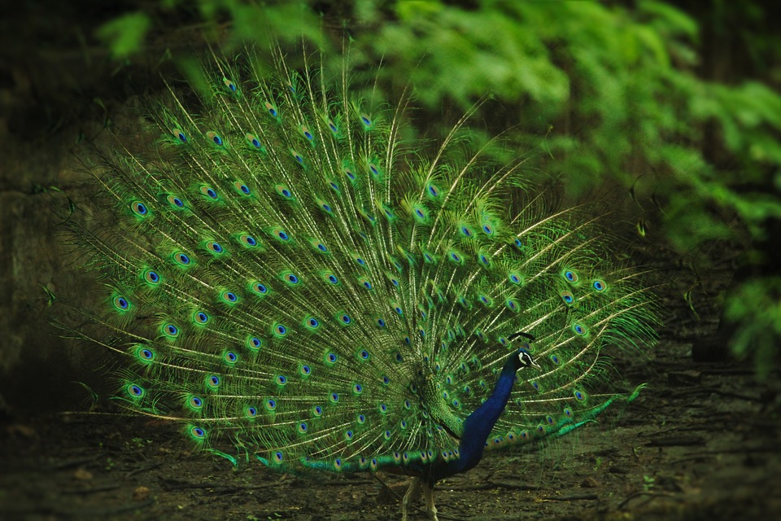
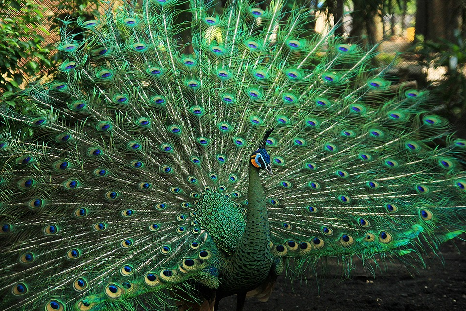
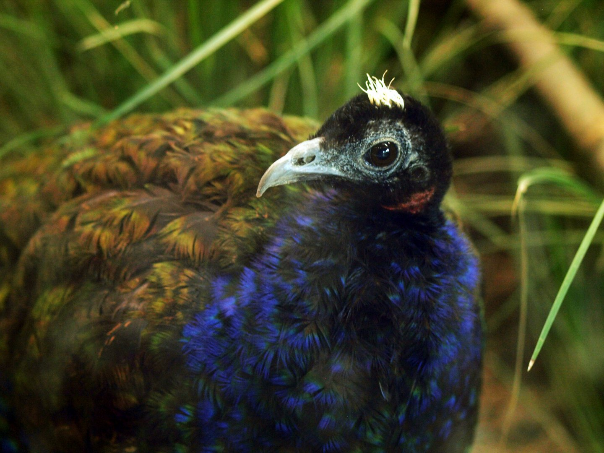

Burung merak merupakan salah satu jenis burung yang disukai oleh banyak orang. Hal ini disebabkan oleh kecantikan yang dimiliki burung yang masuk famili ayam hutan tersebut. Di dunia, burung merak hanya terdiri dari tiga spesies saja, yakni Merak Biru (Pavo cristatus), Merak Hijau (Pavo muticus) dan Merak Kongo (Afropavo congensis). Dua spesies Asiatik adalah merak biru dna merak hijau. Burung merak biru atau merak India banyak ditemui di negara India, dan merak hijau banyak ditemui di negara-negara di Asia Tenggara. Selain itu, Merak Kongo merupakan satu-satunya spesies Afrika yang hanya berasal dari Cekungan Kongo
Merak biru atau merak india, yang dalam nama ilmiahnya Pavo cristatus adalah salah satu burung dari tiga spesies burung merak. Merak biru mempunyai bulu berwarna biru gelap mengilap. Burung jantan dewasa berukuran besar, yang panjangnya dapat mencapai 230 cm, dengan penutup ekor yang sangat panjang berwarna hijau metalik. Di atas kepalanya terdapat jambul tegak biru membentuk kipas. Burung betina berukurang lebih kecil dari burung jantan. Bulu-bulunya tidak mengilap, berwarna cokelat kehijauan dengan garis-garis hitam dan tanpa dihiasi bulu penutup ekor.
Merak hijau (Pavo muticus) adalah salah satu burung dari tiga spesies merak. Seperti burung-burung lainnya yang ditemukan di suku Phasianidae, merak hijau mempunyai bulu yang indah. Bulu-bulunya berwarna hijau keemasan. Burung jantan dewasa berukuran sangat besar, panjangnya dapat mencapai 300 cm, dengan penutup ekor yang sangat panjang. Di atas kepalanya terdapat jambul tegak. Burung betina berukuran lebih kecil daripada dari burung jantan. Bulu-bulunya kurang mengilap, berwarna hijau keabu-abuan, dan tanpa dihiasi bulu penutup ekor.
Merak kongo (Afropavo congensis) atau merak hitam adalah salah satu burung dari tiga spesies merak. Spesies ini merupakan satu-satunya burung di marga Afropavo dan merak yang terdapat di Afrika. Penampilannya menyerupai burung merak Pavo dari Asia yang masih muda. Burung jantan dewasa berukuran besar, dengan panjang menacapai 70 cm, dan memiliki bulu berwarna biru gelap dihiasi warna hijau dan ungu mengilap. Kulit lehernya berwarna merah dan di atas kepalanya terdapat jambul tegak berwarna putih. Burung betina berwarna cokelat, dengan bulu-bulu sayap dan di belakang tubuhnya berwarna hijau mengilap. Di kepalanya terdapat jambul berwarna cokelat.
Bulu indah yang dimiliki merak jantan berguna untuk menarik perhatian merak betina. Ketika seekor merak mengipasi ekornya yang dramatis, itu tidak hanya menarik dan menyenangkan bagi mata manusia kita. Merak betina biasanya akan menilai kebugaran pejantan di sekitar mereka melalui tampilan visual ini. Beberapa ilmuwan berteori bahwa betina menganggap bulu jantan menarik karena terlihat seperti blueberry, sementara yang lain berpikir itu karena tampilan warna-warni dapat membantu melindungi mereka dari pemangsa. Penelitian tentang perilaku merak telah mempelajari apa sebenarnya yang mereka fokuskan selama pacaran. Selain itu, tampaknya sudut bulu ekor merak mungkin lebih penting daripada ukuran tampilan. Ada juga bukti bahwa getaran, tarian (bulu gemetar dan bergerak), dan vokalisasi (burung merak mengeluarkan suara seperti terompet yang khas) penting dalam pemilihan pasangan di antara burung merak.